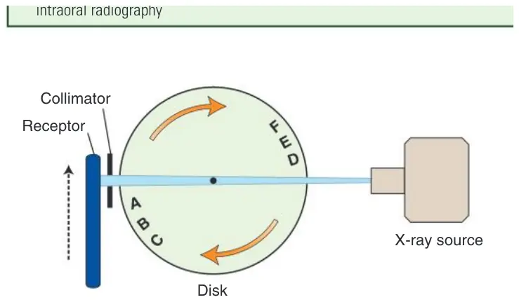
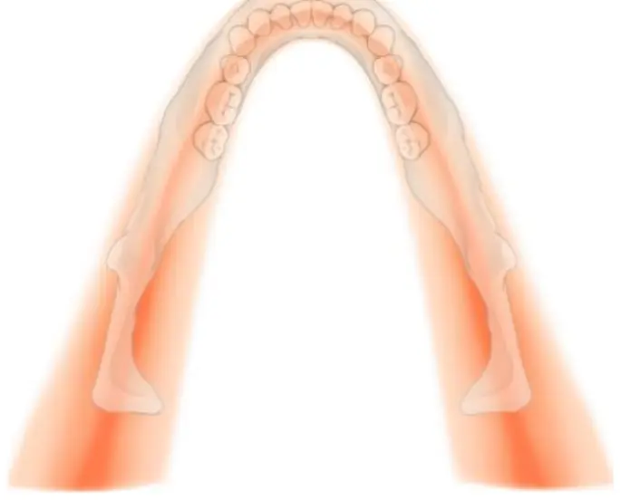

نسخه استخراجشده؛ ترجمه یا تأیید علمی انجام نشده است. وضعیت: captured
پانورامیک — که پانتوموگرافی هم نامیده میشود — یک تکنیک تصویربرداری مقطعی از بدن است که «یک لایهی تصویری پهن و منحنی میسازد و قوسهای دندانی ماگزیلا و مندیبل و ساختارهای نگهدارندهشان را نشان میدهد». و همهی این با «یک چرخش منفرد منبع پرتو و گیرنده گرد سر بیمار».

سازوکارش را در یک جمله بگیر: تیوب از یک سمت بیمار میچرخد و مجموعهی گیرنده به سمت مقابل حرکت میکند؛ گیرنده از کنار کولیماتور میلغزد و بهترتیب تصویر نهفته را میسازد. در سنسور CCD، «یک آرایهی خطی عمودی پشت کولیماتور» بهطور پیوسته خوانده میشود.
و دو کولیماتور در کارند: یکی کنار منبع که پرتو را به یک باریکهی عمودی باریک محدود میکند، و دیگری میان بیمار و گیرنده که پرتو پراکنده را میکاهد.
اندیکاسیونها (جعبهی ۸٫۱) — همه با یک وجه مشترک: نیاز به پوشش گستردهی فکها.
و کاربردهای بالینی شایع: شکستگی فک، مکانیابی مولرهای سوم، بیماری گستردهی دندانی یا استخوانی، ضایعات بزرگ شناخته یا مشکوک، تکامل و رویش دندان (بهویژه در دندانهای مختلط)، دندانهای نهفته و باقیماندهی ریشه در بیماران بیدندان، درد TMJ، و ناهنجاریهای تکاملی.
مزیتها در برابر سری فولماوث: پوشش گستردهی استخوانهای صورت و دندانها، دوز پرتو پایین، سهولت تکنیک، قابل استفاده در تریسموس و بیمارانی که تصویربرداری داخلدهانی را تحمل نمیکنند، سریع و راحت، ابزار بصری مفید در آموزش بیمار.
و عیبها — که به همان اندازه مهماند:
فوکال تراف (لایهی تصویری) تعریف دقیقی دارد: «یک ناحیهی منحنی سهبعدی پهن که ساختارهای واقع در آن روی تصویر پانورامیک بهقدر معقولی خوشتعریفاند».

و یک درجهبندی پیوسته دارد، نه مرز تیز: «ساختارهای واقع در مرکز فوکال تراف واضحتریناند و آنهایی که بهتدریج دورتر میشوند بهتدریج کموضوحتر میشوند.» و بیرون از آن؟ «اجسام بیرون از فوکال تراف محو، بزرگنماییشده، یا کوچکشدهاند و گاهی تا حد ناشناختنی اعوجاج پیدا میکنند.»
و شکلش ثابت نیست: «شکل فوکال تراف با برند دستگاه و نیز با پروتکل تصویربرداری انتخابشده در هر دستگاه تغییر میکند.»
و چهار عامل شکل و پهنایش را تعیین میکنند: مسیر و سرعت گیرنده و تیوب، همراستایی پرتو، پهنای کولیماتور.
و یک هشدار عملی که بهآسانی فراموش میشود: «محل فوکال تراف میتواند با استفادهی گسترده از دستگاه تغییر کند؛ پس اگر پیوسته تصاویر زیربهینه تولید میشوند، ممکن است کالیبراسیون دوباره لازم باشد.»
و یک قابلیت که در برخی دستگاهها هست: شکل و اندازهی فوکال تراف میتواند تنظیم شود تا با آناتومی بیمار بهتر جور دربیاید — برای کودکان، بیماران با مورفولوژی غیرمعمول فک، یا نواحی خاصی مانند TMJ و سینوسهای ماگزیلاری. سازوکارش: «کاهش کمان چرخشی حرکت منبع-گیرنده». و یک سود جانبی: «کمان چرخشی کاهشیافته پرتوگیری بیمار را هم کم میکند».
و لیزر راهنما برای همین است: «دستگاههای پانورامیک معمولاً نورهای لیزری فراهم میکنند تا اپراتور دندانهای بیمار را بهطور بهینه در فوکال تراف جای دهد.»